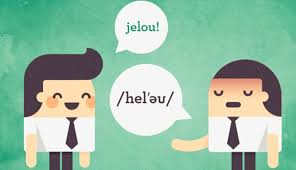

Actividades a realizar
Estas son las actividades a realizar tomando en cuenta la lectura y la pronunciación del texto "Going to the University" del libro digital que se encuentran en la sección Temática.

Pronunciación. El estudiante deberá escuchar la pronunciación de la página, grabar su voz y subir el audio en el muro digital que se encuentra en la sección Pronunciación.
Habla y Escribe. El estudiante deberá grabar un video hablando de sus expectativas universitarias y subir el video en el muro digital que se encuentra en la sección Habla y Escribe. Una vez en el muro, debe ver el video de al menos dos de sus compañeros y escribir un comentario.
Vocabulario. El estudiante deberá traducir de inglés a español la lista de palabras tomadas de la lectura "Going to the University". La actividad se encuentra en la sección Vocabulario.
Gramática. El estudiante deberá desarrollar los ejercicios gramáticales que se encuentran en la sección Gramatica.